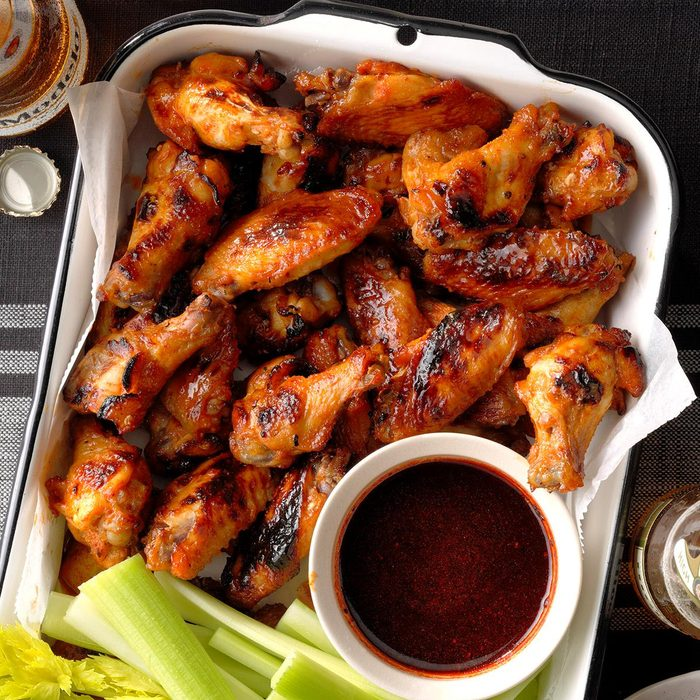

Ingredients
- 1/2 cup orange blossom honey
- 1/3 cup white vinegar
- 2 tablespoons paprika
- 2 teaspoons salt
- 1 teaspoon pepper
- 4 pounds chicken wings
Directions
- Combine honey, vinegar, paprika, salt and pepper in a small bowl.
- Cut through the 2 wing joints with a sharp knife, discarding wing tips. Add remaining wing pieces and honey mixture to a large bowl; stir to coat. Cover and refrigerate 4 hours or overnight.
- Preheat oven to 375°. Remove wings; reserve honey mixture. Place wings on greased 15x10x1-in. baking pans. Bake until juices run clear, about 30 minutes, turning halfway through.
- Meanwhile, place reserved honey mixture in a small saucepan. Bring to a boil; cook 1 minute.
- Remove wings from oven; preheat broiler. Place wings on a greased rack in a broiler pan; brush with honey mixture. Broil 4-5 in. from heat until crispy, 3-5 minutes. Serve with remaining honey mixture.